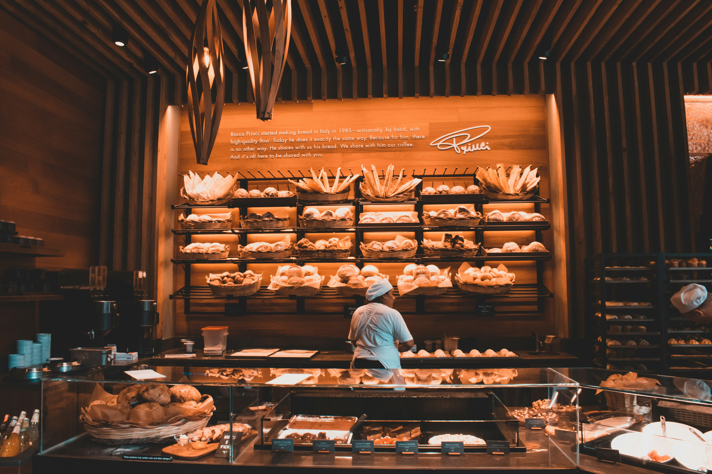

Cakes

Celebration cakes made for birthdays and special occasions.
View Products
Welcome to Sweet Crumbs Bakery, where freshly baked treats are made with care for everyday moments and special occasion
View Products
Celebration cakes made for birthdays and special occasions.
View Products
Freshly baked cupcakes available in different flavours
View cupcakes
A selection of sweet treats packaged together
View Desserts
Sweet Crumbs is a South African small business established in 2021. The bakery
was created to provide freshly baked products for everyday customers and special occasions
its product range includes custom cakes,cupcakes,brownies,cookies and dessert boxes.
The bakery initially operated through social media and wordofmouth
referrals but as the bussiness grows it requires a central online presence where customers
can easily access info about its products and services.
Contact Sweet Crumbs Bakery for your next celebration or event.
Make an Enquiry